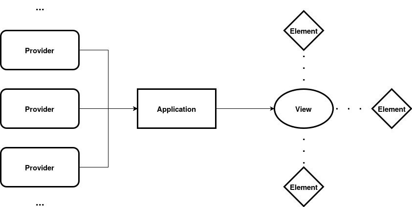
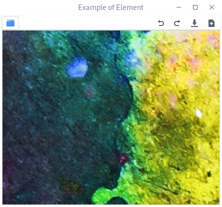

Overview¶
Let us now learn how to design a flexible interface using Qtk. It isn’t any difficult, so let’s get started. An interface designed with Qtk is backed up by three things; providers, views and elements. The following sections describe them in an elaborate manner.

Provider¶
Provider is an object that can produce widgets. They can be taken as a factory that can assemble and give you widgets when required. The provider owns every information about the widget it produces, so it can easily produce duplicate widgets and also control them as required. Apart from assembling widgets, they can also dissemble a widget when required. A dissembling process ideally extracts information from a widget and then destroys it.
Widgets can however be stored (in memory), if making a widget is so tedious compared to storing them. So, you can also reuse a widget and make a new one only when you run out of stock. The process of dissembling a widget is called clearing. A widget produced by a provider is known as child. In fact, the word widget is rarely used and instead the term child is used.
Element¶

Element is an container that can hold the child produced by a provider. They are the front-end in an application, so any sort of interaction happens via elements. An element has an action button. It is used to alter the child in the element, like changing, removing, clearing a child. Action buttons are recommended, but can be avoided if you have any other approach. On the side of an action button, you can also add widgets like quick tool buttons. Ideally you can attach only one widget, so if you want to add multiple widgets, put them inside a container like grid or box. Elements can not be directly attached to an interface, they need a container called views.
View¶
View is a container of widgets. Qtk comes with three basic views, that are enough for most of the use cases. New views can also be made easily if they don’t satisfy your need. The three views are :
Bin¶
A bin can contain only one child. The child can either be another view or element.
Paned¶
A paned is a container that can hold two children, either in vertical or horizontal direction. Similar to a bin, paned can hold either a view or an element. Paned contains a movable handle between its children, which can change the space allocated to each child.
Notebook¶
A notebook can contain an arbitrary number of children, but they all should be elements. In a notebook, only one child is visible at a time and the visible child can be changed using the tabs located on an edge. Notebook also has action buttons, attached at either side of tabs or at one side. They are optional, so can be avoided if not needed.
Framing an Application¶
Now we describe how to create a convenient interface using Qtk.
Make all the basic things required to make the application, like collecting plugins, user data.
From your plugins and own collection, make a list of providers which can produce child widgets.
Design an interface that you and a lot of users find convenient. The interface designed should be using views and elements, with children from providers.
Then connect the elements, views with tweak functions. Tweak functions are those that can modify properties of views and elements.
Provide a way for the users to save and load interfaces using Qtk’s built-in functions.
The above points do not explain how they are done practically, so let’s get our hands wet in a short tutorial in next chapter.